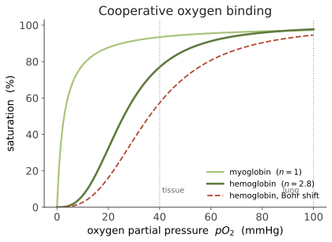

基础 III · 蛋白质：从序列到机器
证据地位：【实】——结构层级与功能机制是稳定知识；折叠问题的"解决程度"属【争】，末节说明。 蛋白质是细胞里干活的分子：催化、运输、支撑、收缩、识别、信号传递，几乎都由它承担。本页讲三件事——序列如何决定结构、结构如何决定功能，以及为什么"从序列预测结构"这个问题会成为 AI 时代最著名的科学突破之一（线六第一页的伏笔）。
一、四级结构
一级结构：氨基酸的线性序列。20 种标准氨基酸共用一个骨架，差别在侧链（R 基）——侧链的化学性质决定一切：疏水（Ala、Val、Leu、Ile、Phe）、极性（Ser、Thr、Asn、Gln）、带电（Asp、Glu 负；Lys、Arg、His 正）、以及几个特殊分子（Gly 极小而柔软；Pro 造成折角；Cys 能形成二硫键）。
二级结构：局部规则构象，由骨架之间的氢键稳定，与侧链种类关系较弱。主要两种——α 螺旋（每圈约 3.6 残基）与 β 折叠（伸展的链并排，可平行或反平行）。它们是 Pauling 从化学原理推出来的，属于结构生物学最早的胜利。
三级结构：整条链折叠成的三维形状。驱动力主要是疏水效应——疏水侧链被水"挤"进内部，形成疏水核心；这是熵驱动的（水分子获得自由度），不是简单的"油喜欢油"。此外有氢键、离子键、范德华力、二硫键共同微调。
四级结构：多条肽链组装成复合体（如血红蛋白的 α₂β₂ 四聚体）。
二、折叠：序列决定结构
Anfinsen 实验（经典，诺奖）：把核糖核酸酶变性（解开），再去掉变性剂，它能自发重新折叠并恢复活性。结论——折叠所需的全部信息都写在一级序列里，天然构象通常是自由能最低的状态。
但这里有个著名的悖论。Levinthal 悖论：若一条 100 残基的链要随机搜索所有构象，即便每个构象只花皮秒，穷举时间也远超宇宙年龄；可实际折叠只要毫秒到秒。所以折叠不是随机搜索。
解答是能量漏斗（folding funnel）：自由能面不是平坦的高维迷宫，而是一个漏斗——大量高能构象向下汇聚，局部相互作用先形成（二级结构成核），再逐步组装。分子沿着能量梯度"滚"下去，不需要穷举。这是一个很好的例子：看似不可能的搜索问题，被能量面的形状化解了。（🔗 优化与能量景观，见数学/物理站。）
细胞里还有分子伴侣（chaperone）协助折叠、防止错误聚集。折叠失败会致病：阿尔茨海默病、帕金森病、朊病毒病都涉及蛋白错误折叠与聚集——错折的蛋白不只是失去功能，还可能获得毒性并模板化传播。
三、结构决定功能：三个范例
① 酶：精确的口袋。 活性位点是一个几何与化学都精确匹配底物过渡态的凹槽。要点在于酶结合过渡态比结合底物更紧——这正是降低活化能的物理含义（上一页米氏动力学的分子基础）。
② 血红蛋白：别构与协同。 四个亚基各带一个血红素，结合 O₂ 后构象改变，提高其余亚基的亲和力（协同效应），于是氧合曲线呈 S 形（sigmoid）而非双曲线。

S 形的意义是开关式响应：在肺部（高氧分压）几乎装满，在组织（低氧分压）大量卸载，运输效率远高于双曲线。这是别构调节最经典的范例——分子通过构象变化实现信息整合，而 S 形曲线在生物学中无处不在（下页起会反复见到）。
③ 分子马达：把化学能变成机械功。 肌球蛋白沿肌动蛋白丝行走驱动肌肉收缩；驱动蛋白沿微管运输货物；ATP 合酶是一台真正的旋转马达。它们的共同逻辑是构象循环：ATP 结合与水解驱动一系列构象变化，通过与轨道的不对称结合，把随机的热运动整流成定向运动（"棘轮"机制）。这是纳米尺度上把化学能转成机械功的实现方式，也是生物物理最漂亮的一章。
四、蛋白质的世界有多大
一条 100 残基的链，可能序列有 \(20^{100}\approx 10^{130}\) 种——远超宇宙原子数。演化只探索了这个空间中极小的一角，而现存蛋白质大多属于有限数量的折叠类型（fold）家族（数千量级）。
这带来两个重要含义：
- 同源性可推断：序列相似的蛋白通常结构与功能相似，这是生物信息学比对（线四第四页）与功能注释的基础。
- 大量可行的蛋白从未被演化尝试过——这正是从头设计蛋白（de novo design）的机会所在：设计自然界不存在、但物理上稳定且有用的分子（线六第一页）。
五、折叠问题"解决"了吗【争】
"从序列预测三维结构"曾是生物学半世纪的核心难题。AlphaFold 等深度学习方法在结构预测基准上取得了对许多单体蛋白接近实验精度的表现，是货真价实的突破，并已产出覆盖极大规模的结构预测数据库，深刻改变了日常研究方式。
但"折叠问题已解决"这个说法需要限定，这是本页唯一的【争】：
- 预测结构 ≠ 理解折叠过程：模型给出终态坐标，不等于给出了折叠路径与动力学机制。
- 静态 ≠ 动态：许多蛋白的功能依赖构象变化、柔性区域与多态平衡；单一静态结构可能误导。
- 难点仍在：内在无序蛋白（本就没有固定结构，且在信号与相分离中极重要）、复合物与界面、点突变的精细效应、配体结合构象。
- 准确性不均：不同蛋白与区域的置信度差异大，需看置信度指标而非一概信任。
恰当的说法：结构预测取得了历史性进展，并已成为标准工具；但"蛋白质折叠"作为一个物理与动力学问题，尚未终结。（线六第一页会接着讲，并核对最新进展。）
线一到此结束：细胞如何取能（一）、如何用信息（二）、执行分子如何工作（三）。这三页是后面全部内容的地基。
下一页进入线二——人体。第一个主题是稳态：把生理学当作一个控制系统来读。